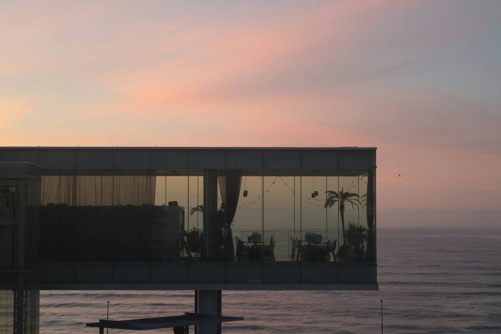
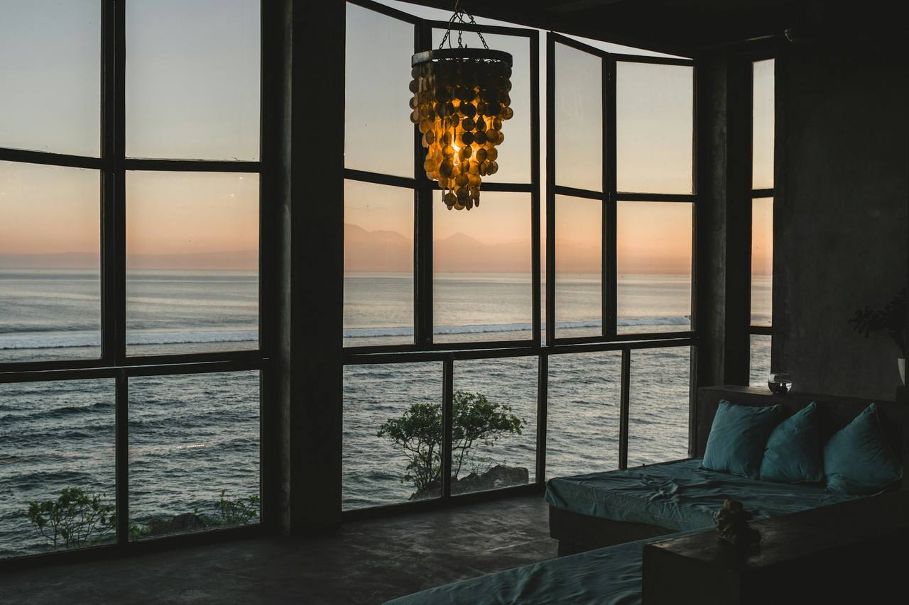
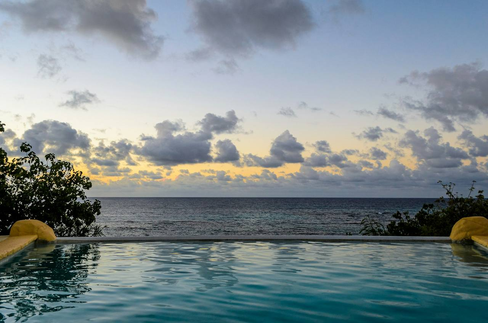
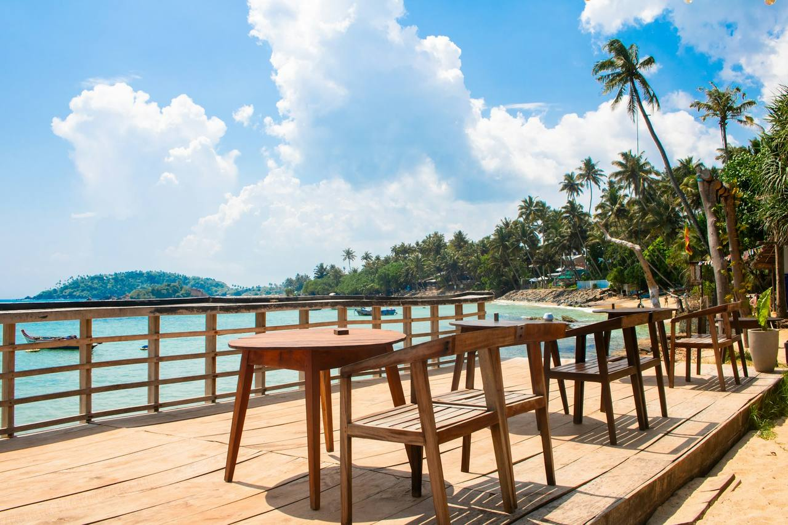
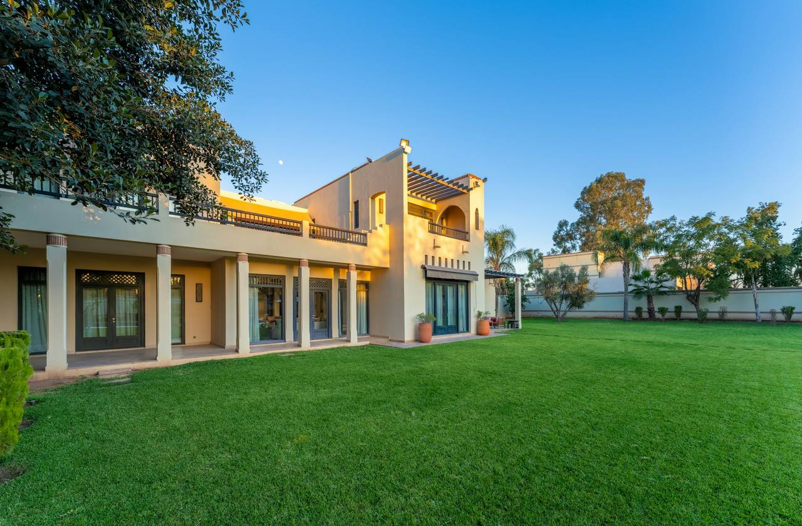
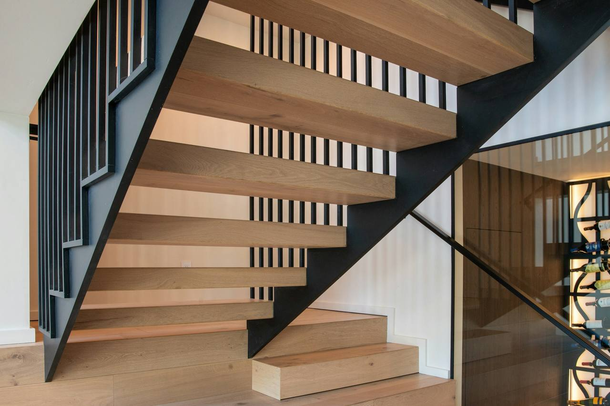
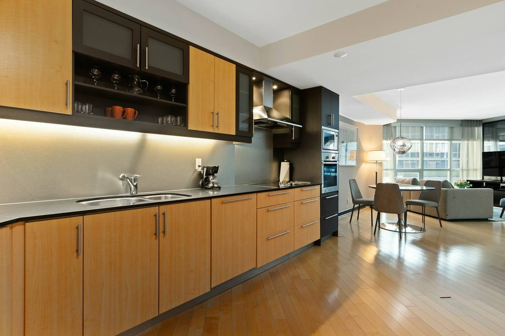
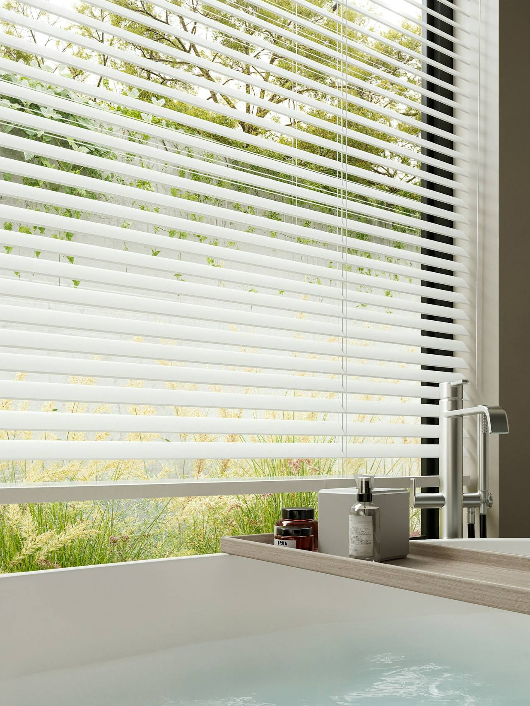

Cliff House
A long house held to the cliff by a basalt plinth, opening its cedar screens to the sea.
Design narrative
The clients asked for a house that would take the weather seriously.
The site is an exposed bench of basalt above Omaha Bay: salt wind from the north-east, a long view the owners did not want framed so much as held. The plan answers as one loaded bar, services and entry on the hill side, one continuous living floor facing the water, bedrooms stepped below, every room ending in the horizon.
A plinth of dark basalt does the quiet structural work, lifting the timber volume clear of the winter spray and seating the house in the rock it stands on. Above it, a blackened-cedar volume with full-height glazing slides beneath a single roof plane; the copper flue reads from the water as a thin vertical stroke and marks the hearth from a mile out.
Cedar slat screens run the western length of the living floor. They close against afternoon glare and the nor'easter, and open on rails to make the room a veranda. From the beach the house sits low and long, lighting at dusk like a lantern set down on the cliff.
Material palette
Drawn from the siteThe house in eight views
Select any image to enlarge





